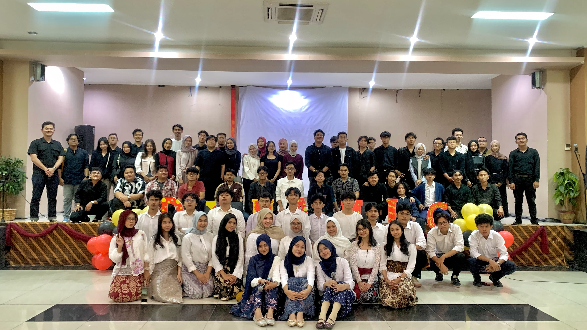
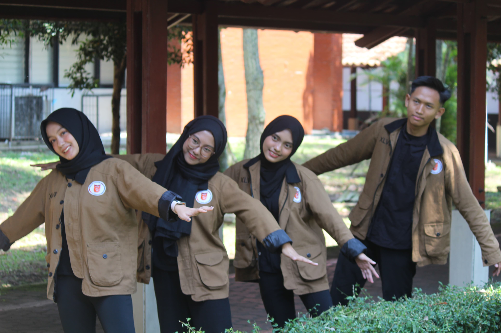

About Me
Nama aku Yona Putri Azzahra biasa dipanggil Yona, aku berumur 19 tahun yang berasal dari Bukittinggi, Sumatera Barat. Hobi aku menonton film dan tidur. Warna favorit beige dan ungu
Fun Fact About Me
Sebenarnya panggilan aku bunga bukan yona
Punya Banyak Kucing
Coki, Ciko, Cio, Cui, Abu, Miu, Panda, Ibel, al, Putin
Kepanitian 2025

Panitia Dynamic
Divisi acara
Himpunan

Kewirausahaan
Staf Kewirausahaan